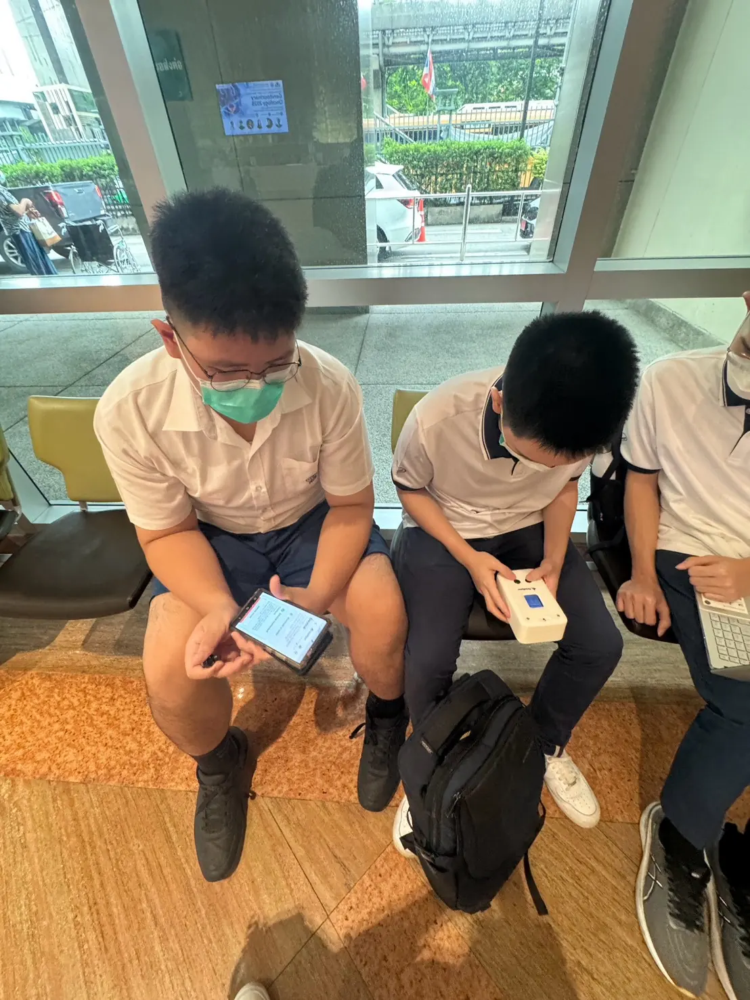
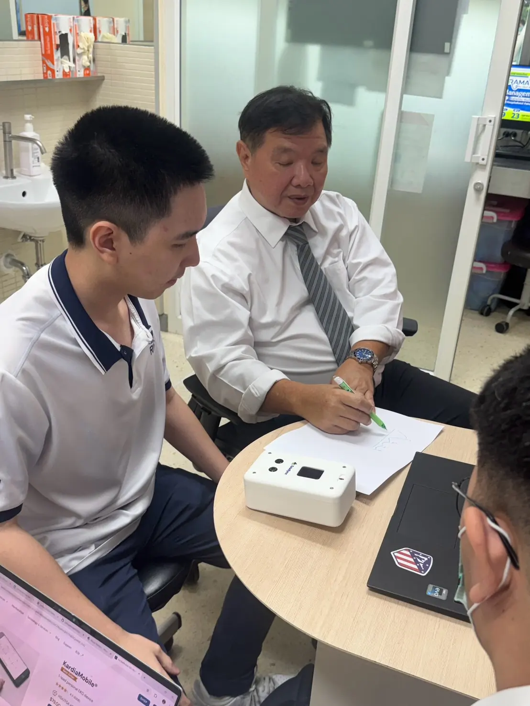
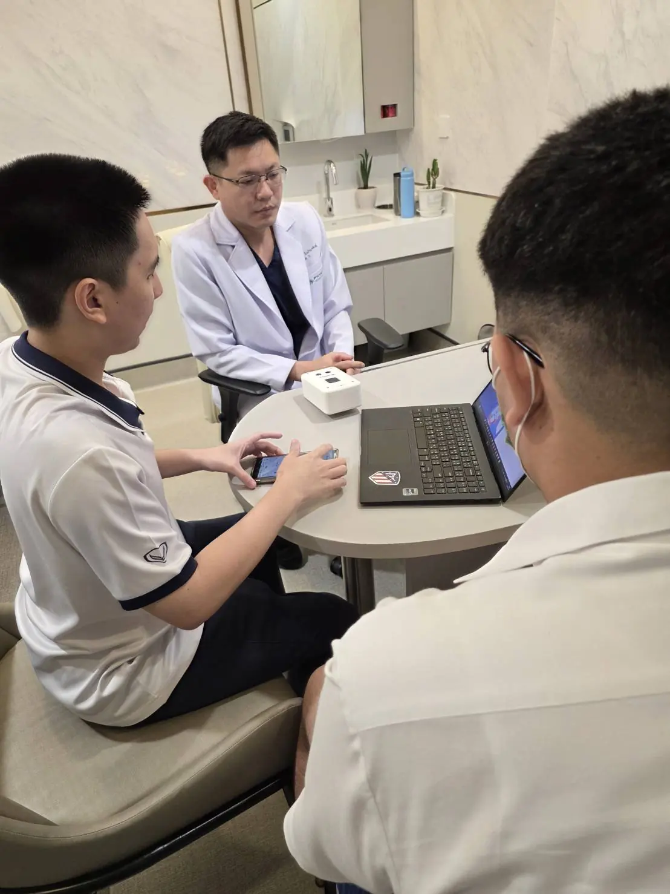
Why TeleSync Matters
Telemedicine connects patients to a doctor, but not to a stethoscope. We took our prototype into hospital consultation rooms to put that gap in front of the clinicians who face it every day.
From our bench to the consultation room
We brought the working prototype to hospital clinicians so the people who would use it could hold it, question it and help shape what comes next.
-
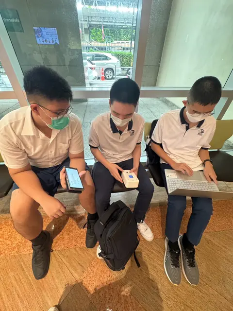
01PrepareLast checks on the device and app before meeting clinicians
-
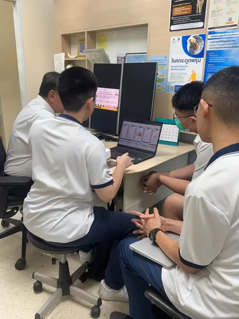
02PresentWalking clinicians through the concept and the guided app
-
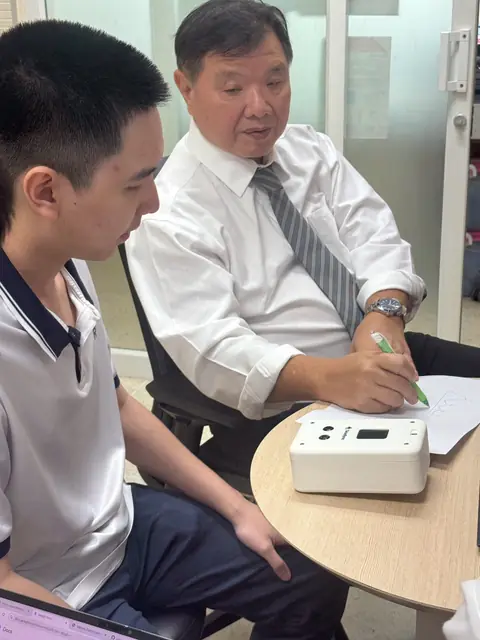
03Hands-onA doctor examines the prototype and sketches ideas
-
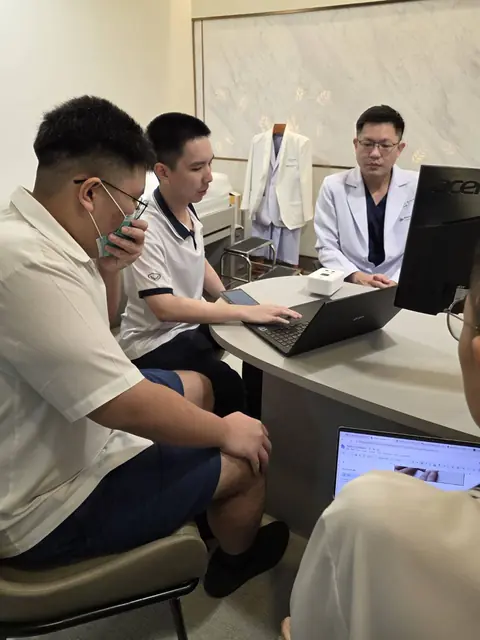
04ListenClinical feedback shapes the next iteration
Moments from our hospital visits
Tap any photo to view it full size.

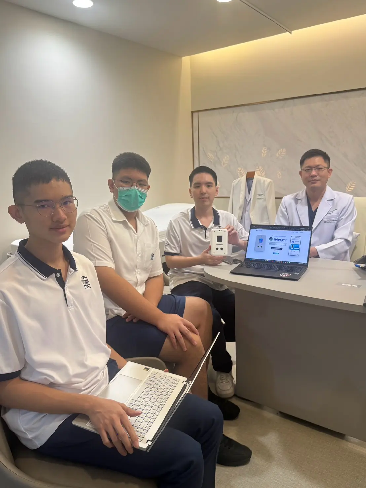
The team and a clinician with the prototype
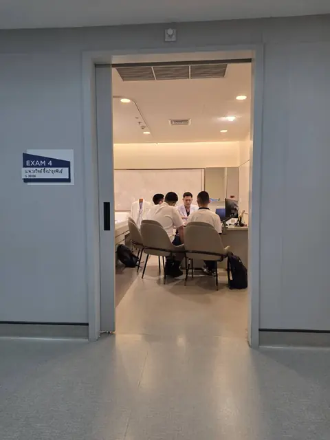
Through the exam-room door, mid-session
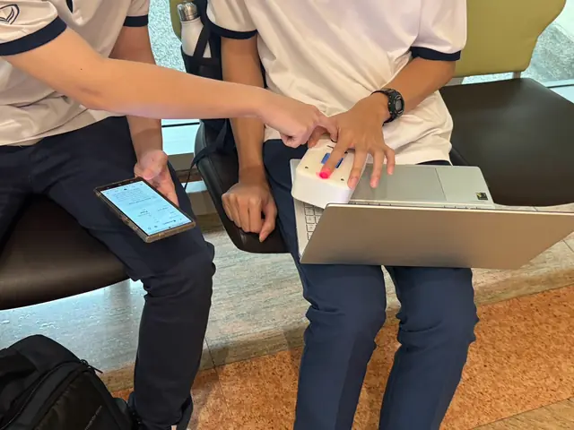
Checking the app against the device
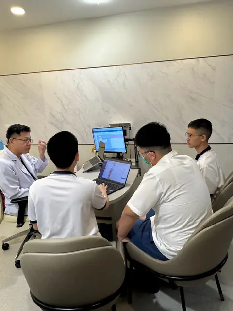
Talking through the app with a clinician
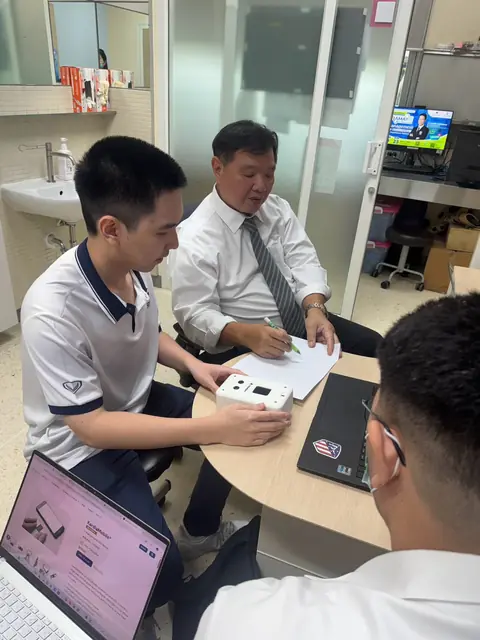
Discussing the device design
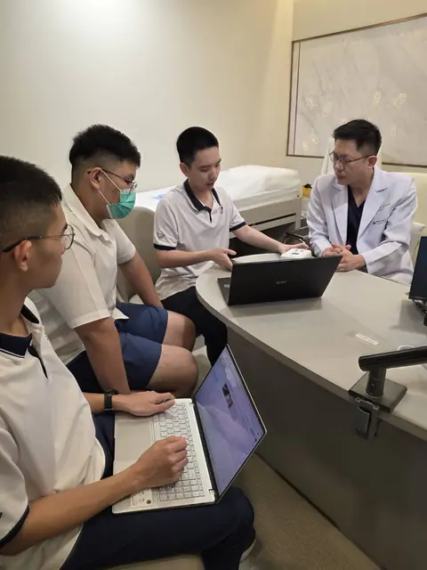
Taking notes during clinician feedback
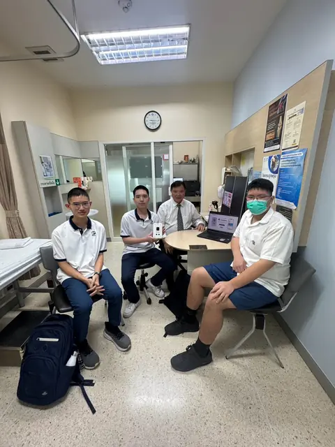
Debrief in the consultation room
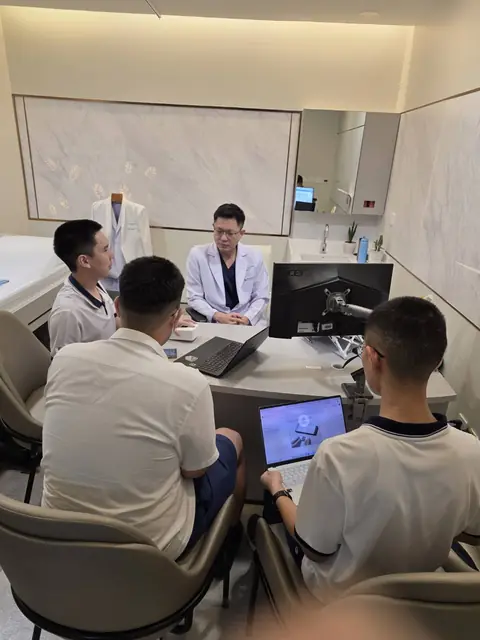
A full consultation-room session
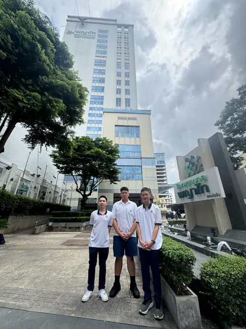
Outside the hospital after the visit